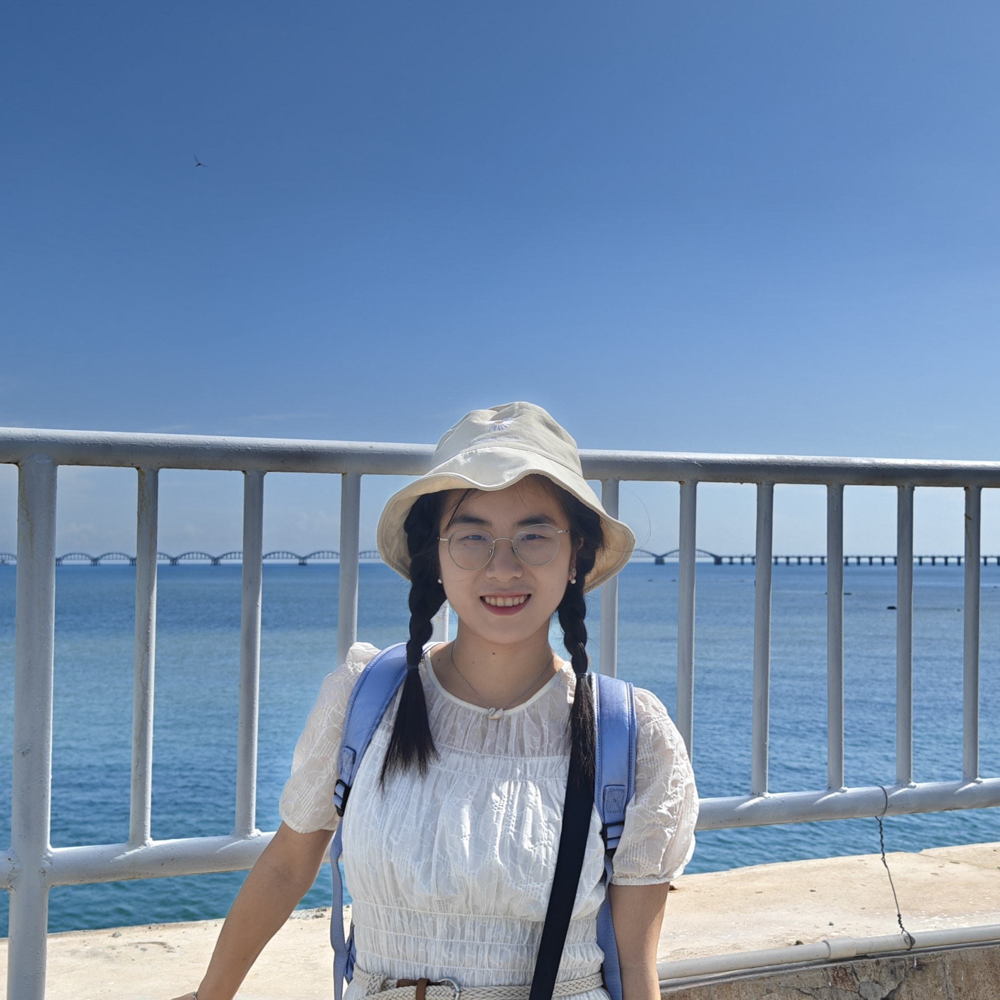
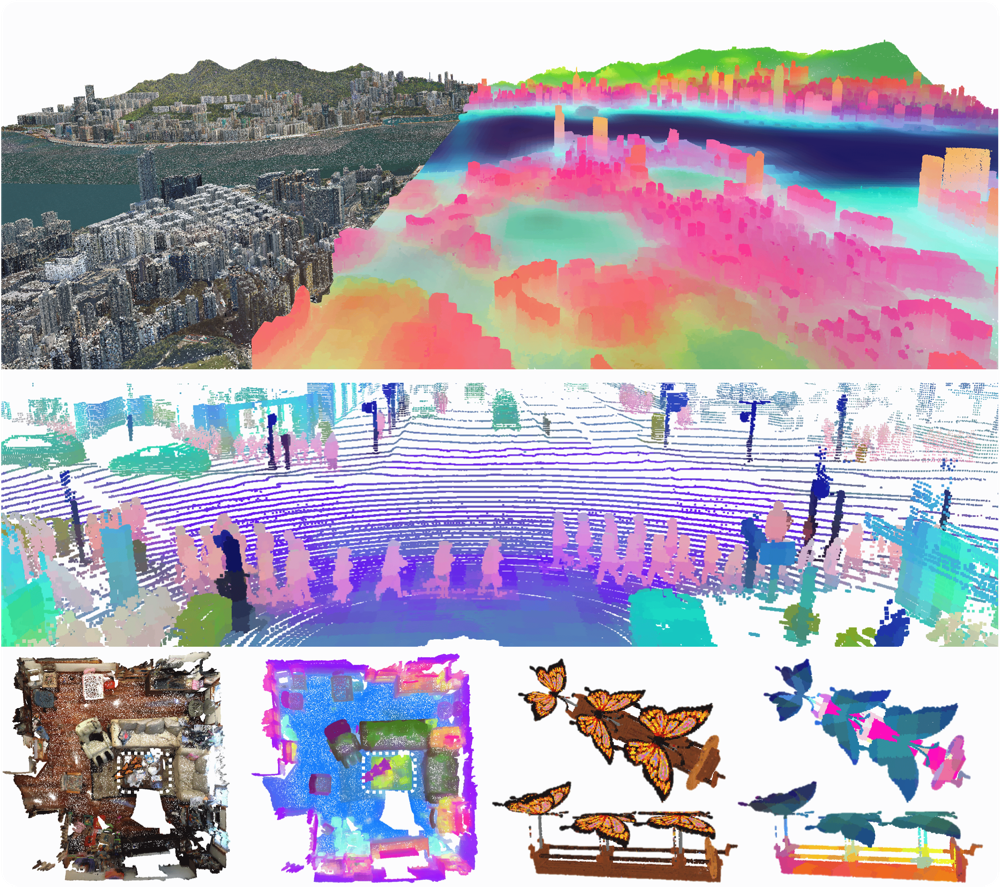
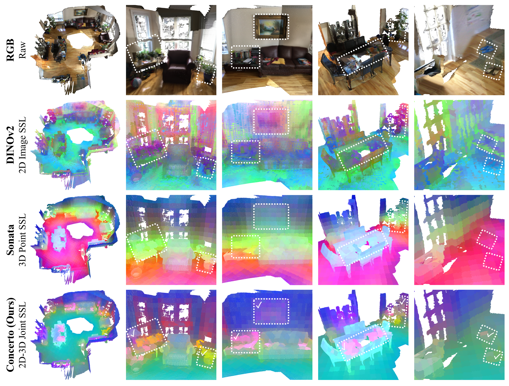
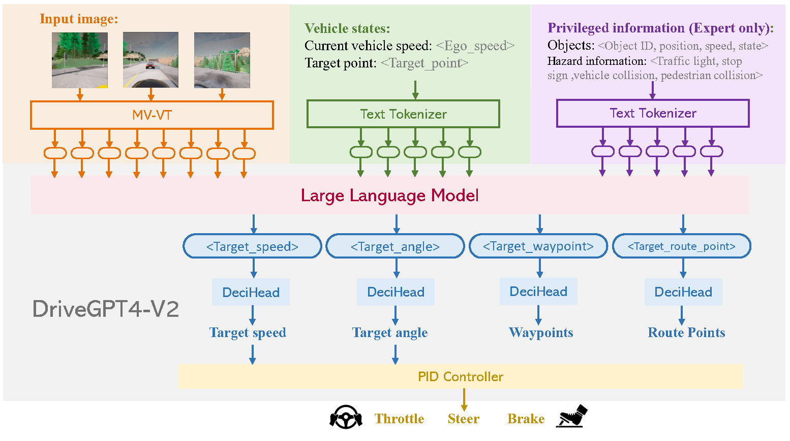
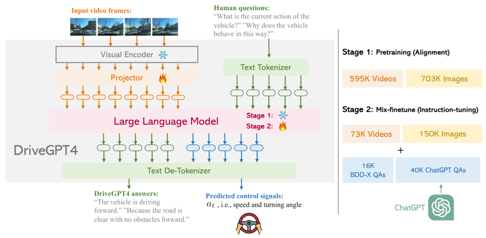

|
Yujia Zhang （张宇嘉） Hi, I'm Yujia, a second-year PhD student at The University of Hong Kong, where I work on 3D understanding and representation learning. I am advised by Hengshuang Zhao and Yizhou Yu. Previously, I received my bachelor's degree (2020-2024) from Zhejiang University in Automation and Chu Kochen Honors College. |
 |
Recent News |
Project
|

{kind=link}
ResearchMy research interests include Representation Learning, Computer Vision, and 3D Understanding. |
|
 |
Utonia: Toward One Encoder for All Point Clouds
Yujia Zhang, Xiaoyang Wu, Yunhan Yang, Xianzhe Fan, Han Li, Yuechen Zhang, Zehao Huang, Naiyan Wang, Hengshuang Zhao ICML, 2026 [paper] [page] [github] [model] 
|
|
 |
Concerto: Joint 2D-3D Self-Supervised Learning Emerges Spatial Representations
Yujia Zhang, Xiaoyang Wu, Yixing Lao, Chengyao Wang, Zhuotao Tian, Naiyan Wang, Hengshuang Zhao NeurIPS, 2025 [paper] [page] [github] [demo] 
|
|
 |
DriveGPT4-V2: Harnessing Large Language Model Capabilities for Enhanced Closed-Loop Autonomous Driving
Zhenhua Xu, Yan Bai, Yujia Zhang, Zhuoling Li, Fei Xia, Kwan-Yee K. Wong, Jianqiang Wang, Hengshuang Zhao CVPR, 2025 [paper] |
|
 |
DriveGPT4: Interpretable End-to-end Autonomous Driving via Large Language Model
Zhenhua Xu, Yujia Zhang, Enze Xie, Zhen Zhao, Yong Guo, Kwan-Yee K. Wong, Zhenguo Li, Hengshuang Zhao RA-L, 2024 [paper] [page] |
Misc |
Internship |
| A*STAR I²R, Research Intern supervised by Yan Wu, 2024 |
Teaching |
|
Teaching Assistant, Computer Programming, Fall 2025
Teaching Assistant, Computer Programming, Fall 2024 |
Awards |
|
ICML Golden Reviewer, 2026.
Hong Kong PhD Fellowship Scheme (HKPFS), 2024. National Scholarship, 2021 & 2023. Outstanding Graduate of Zhejiang Province and Zhejiang University, 2024. |
Organization |
|
ZJUSRA, Students' Robot Association of Zhejiang University (Top 10 Club), 2020-2022
ZJUDancer, the robot team for KidSize soccer competition of RoboCup Humanoid League in Zhejiang University, 2024 |
|
Template borrowed from jonbarron. |